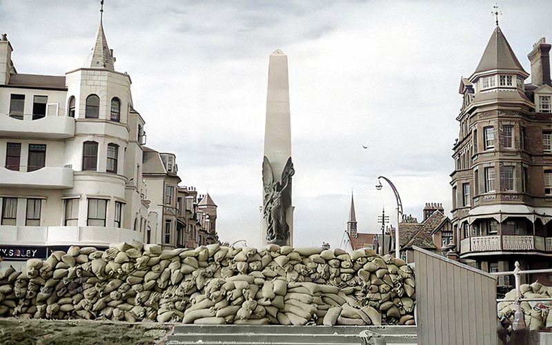

World War II (1939-45)
Initially Bexhill was identified as a safe place at the outbreak of the Second World War and received over 700 evacuated children from London. This changed in early 1940 when frequent air-raids began along the south coast.
Incident Locations
There were 63 air-raids in total, dropping around 450 high-explosive bombs and over 1,000 incendiary bombs. 81 buildings were destroyed, 217 seriously damaged and 4,324 lightly damaged. 21 civilian deaths were recorded, 1 soldier lost his life.14
For almost 80 days Bexhill lay in the 'bomb alley' flight path to London, in one 24 hour period over 48 V-1 flying bombs (doodlebugs) were tracked overhead.
▶ Play video
Click the map-icon above to see locations and a timeline of these incidents using this colour key:
• High-explosive/incendiary bomb
• V-1 flying bomb
• Aircraft crash
• Land mine
• Bomb (no details)

The bomb locations are taken from a 1944 Bexhill Observer map made by former local estate agent Percy Webber15, with present-day context given by David Hatherell from the Local History Study Group.
Air-raid Shelters
Also known as bomb shelters, these were structures used by civilians in the event of enemy attacks from the air. There were 70 of these in use around the town.
In the 1943 equipment census, it was reported that the store of Crawford chocolate wholemeal biscuits had been stolen from all of Bexhill's public shelters!

Air-raid Precautions Map
This map shows fire action stations, emergency centres and warden posts around Bexhill during the war. It was created by Borough Surveyor Harold Percy Storey in March 1942.

Existing Structures Today
Bexhill's beaches were closed off and surrounded by barbed wire, mines and concrete anti-tank cubes. Light anti-aircraft guns supported by armoured vehicles were placed around town and later, heavy anti-aircraft guns were installed along the promenade.
Anti-tank cubes (dragons's teeth), air raid shelters and pillboxes can still be found today. There are also three war memorials.

© Bexhill Museum